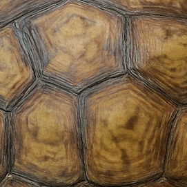
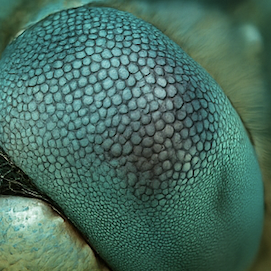
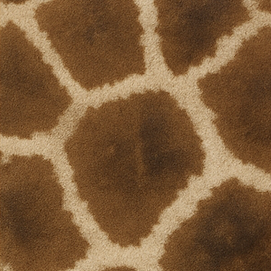
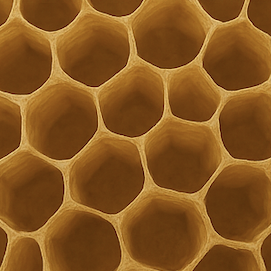
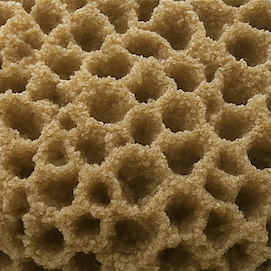
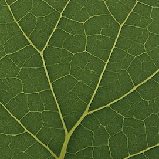
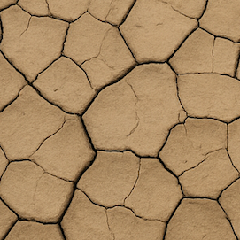
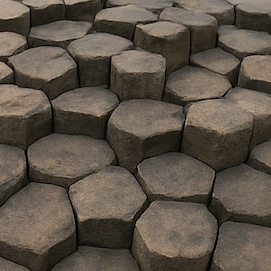
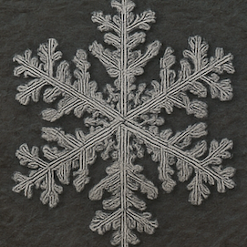
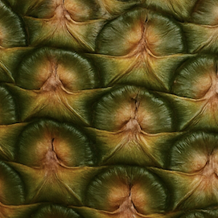
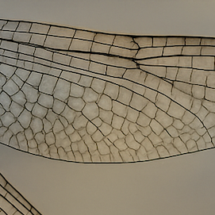
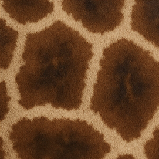
Whether or not something is "natural" is a conceptual line that humans draw,
or maybe feel.
Sometimes that distinction, natural vs unnatural, feels very alienating. Other times, it melts away.
I find comfort in the idea that mathematics is indifferent;
it reveals continuity across both sides of the line.
The cold comfort of a faraway star though... certainly not a warm touch.
The Voronoi tessellation is a fun illustration of this idea.
↓